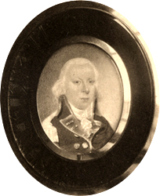

|
|
Home | Corson
Collection | Biography | Works | Image
Collection | Recent
Publications | Correspondence | Forthcoming
Events | Links | E-texts | Contact
Abbotsford Miniature: A Disputed Portrait
of Scott
Following his betrothal to Charlotte Carpenter
or Charpentier (see Williamina,
Charlotte and Marriage), Scott sent his fiancée
a miniature portrait of himself, with a covering letter dated
24 October 1797. In his Memoirs of the
Life of Sir Walter Scott, Bart., Lockhart identified
an anonymous miniature at Abbotsford as the portrait in question
but considered it 'not a good work of art' (IX, 259). It
depicts a young man in scarlet and blue military uniform,
measures
1½ x
1¼ cm,
and is encased in a frame of blue enamel and gold, with a
lock
of light
brown hair
inserted behind.
Francis Russell, however, in his Portraits of Sir
Walter Scott, argues that 'it is difficult to see how this can
ever have been accepted as a likeness of Scott' (p. 95).
Quite apart from the lack of physical resemblance, the
uniform is datable to the 1780s and is not that of the
Edinburgh Light Dragoons, the only regiment with which
Scott served. Russell suggests that the portrait may depict
one of Scott's brothers.
|

Photogravure
of disputed miniature portrait of Scott
|
|
The image portrayed on this page is a photogravure or photo-engraving
of the disputed Abbotsford miniature prepared for The Scott
Gallery (1903), a collection of portraits of Scott, his family,
friends, and contemporaries, and of historical figures portrayed
in his work. Photo-engraving involved transferring a photographic
negative of a drawing, painting, or object to a metal plate, and
then etching it in.
Bibliography
- Caw, James. L. The Scott Gallery:
A Series of One Hundred and Forty-Six Photogravures, Together
with Descriptive Letterpress (Edinburgh; London: T.C. & E.C.
Jack, 1903)
- Johnson, Edgar. Sir
Walter Scott: The Great Unknown (London: Hamish Hamilton,
1970)
- Lockhart, J. G. Memoirs of the Life
of Sir Walter Scott, Bart., 2nd edn (Edinburgh: R. Cadell,
1839)
- Russell, Francis. Portraits
of Sir Walter Scott: A Study of Romantic Portraiture (London:
The Author, 1987)
Back to Index

Last updated: 09-Nov-2004
© Edinburgh University Library
|
|